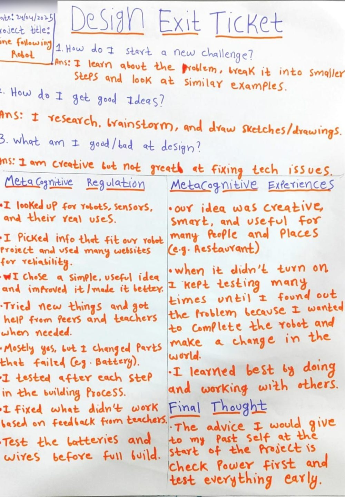
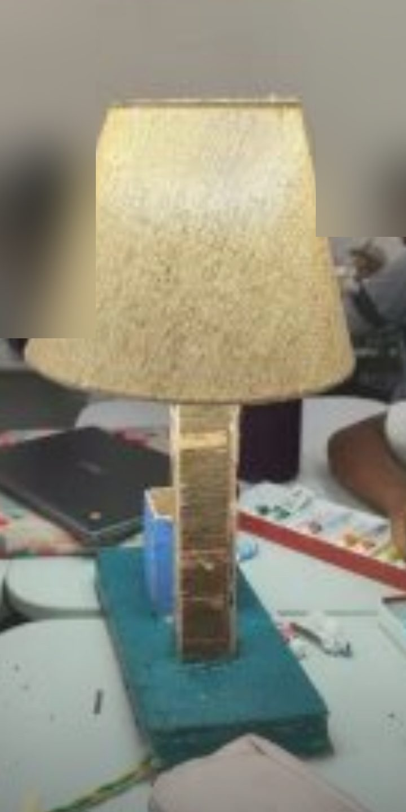
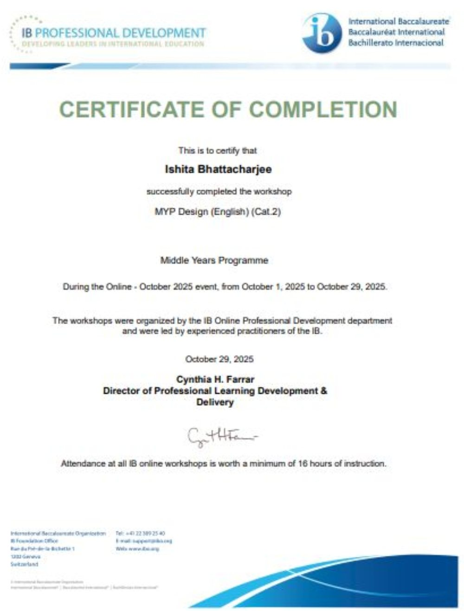

MYP Design
I teach Design in the International Baccalaureate Middle Years Programme (MYP) at Sreenidhi International School. I am also Grade Lead for MYP 3 and mentor teachers on the MYP Personal Project.
The design cycle, criteria A to D
The MYP design cycle shapes my lessons and the way I lead projects. Tap a criterion.
- It starts with a real problem. Students learn to find one, research it and justify why it needs solving. In my leadership work, this is the listening stage.
- Sketches, specifications and honest comparison of options. I show how students choose between ideas, and how I help teams do the same.
- Making it real with computer-aided design (CAD), 3D printing, laser cutting, wood and electronics. I build alongside students, so I know where the hard parts are.
- Testing, feedback and reflection, for students and for me. My journal is where I evaluate my own decisions in public.
Use the arrow keys to move between stages if you are on a keyboard.
From my MYP classroom
-
Classroom3-min readThe Thinking Wall: helping MYP students notice how they think
Four thinkers, a shared board and a "fifth thinker" students invented.
-
Classroom2-min readLearning Fest: when students transferred their skills to a new context
Electrical board game skills reused, unprompted, to build a new Learner Profile game.
-
ClassroomArticle4-min readSlowing the design cycle down: scaffolding inquiry in Criterion A
Why I taught research and thinking skills before ideation in a lip balm unit.
-
Classroom2-min readEarning the Padlet Green Belt, and what Padlet means in my classroom
Giving every student a voice, including the ones who hesitate to speak.
-
Classroom2-min readFaces of MYP 1: a classroom wall made by students
Stepping back from teacher-led decoration so students own the space.
-
Classroom2-min readMYP Enhancing Curriculum Design Basecamp
A month of learning with Design teachers around the world.
-
Leadership2-min readLeading a session on student voice, choice and ownership
Co-designing existing units with colleagues to embed student agency.
-
Making4-min readRapid Prototyping Sprint: the start of a school-level innovation ecosystem
Student teams ideate, prototype and pitch in one day, then get mentored by an educator from South Korea.
-
Classroom3-min readExit tickets that teach students to think about their thinking
Deeper prompts after a project help students see how they plan, monitor and adjust.
-
Classroom4-min readDesigning for inclusivity: a ramp for the school
A student used the nets of 3D shapes from maths to plan the cuts for an adjustable wooden ramp.
-
Classroom3-min readWhy do we claim to be the sole authority on knowledge?
A lamp brainstorm at the start of a design unit, and what student ideas taught me.
-
Classroom3-min readDraw your vision of the future: line-following robots
Students drew how robots could farm, move people and deliver parcels.
-
Classroom4-min readBalanced: a self-management activity
Students visualise balance in their lives and plan how to restore it.
Student work



Formal learning in MYP Design

The Personal Project
The Personal Project is the MYP's student-led project, where students choose something to investigate or make over an extended period.
- Supervisor to students since December 2024.
- Mentor for teachers since August 2026. I guide teachers on project requirements, supervision practice and assessment criteria.
[Add one example of a Personal Project you supervised, with the student's consent.]
Grade Lead, MYP 3
I have led the MYP 3 year group since January 2026, with a focus on student wellbeing and pastoral care. Read more. I also lead ManageBac implementation and support across programmes and year groups.